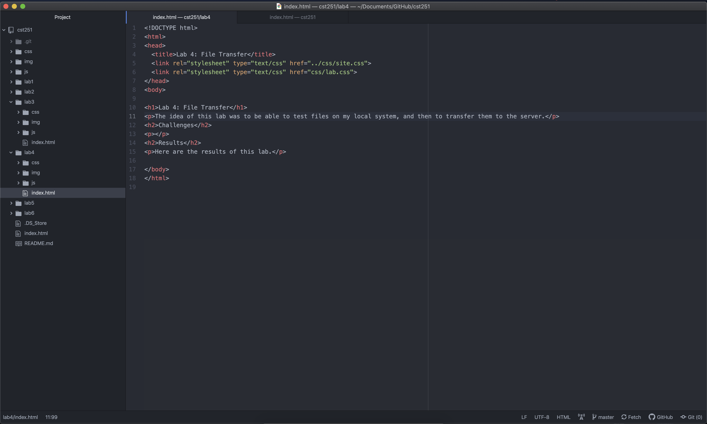
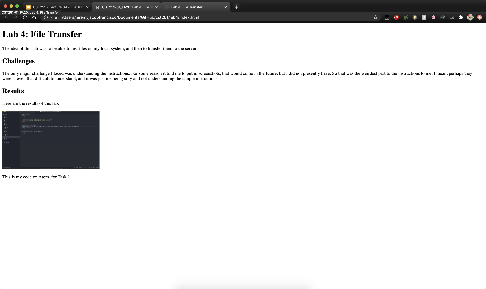
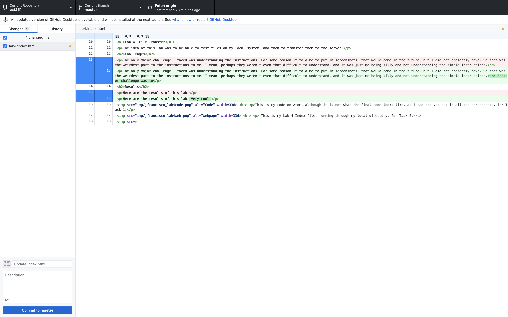

The idea of this lab was to be able to test files on my local system, and then to transfer them to the server.
The only major challenge I faced was understanding the instructions. For some reason it told me to put in screenshots, that would come in the future, but I did not presently have. So that was the weirdest part to the instructions to me. I mean, perhaps they weren't even that difficult to understand, and it was just me being silly and not understanding the simple instructions.
Another challenge was to
Here are the results of this lab. Very cool!
This is my code on Atom, although it is not what the final code looks like, as I had not yet put in all the screenshots, for Task 1.
This is my Lab 4 Index file, running through my local directory, for Task 2.
This is the screenshot of my Github Desktop before I pressed commit. It may seem very lacking in changes, but that is only because I did not read ahead in the instructions, and I was committing along essentially every step.

This is the homepage of my cst251 Github. The links are all working, and they all lead to the respective labs' index files. My photo shines brightly amongst the text.